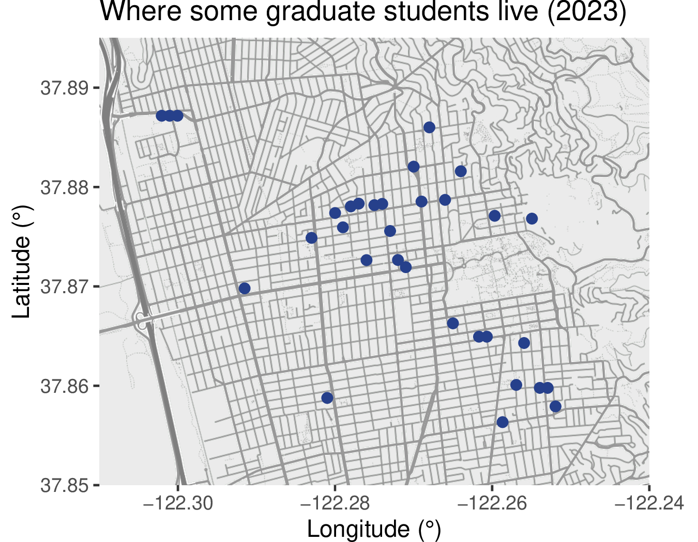
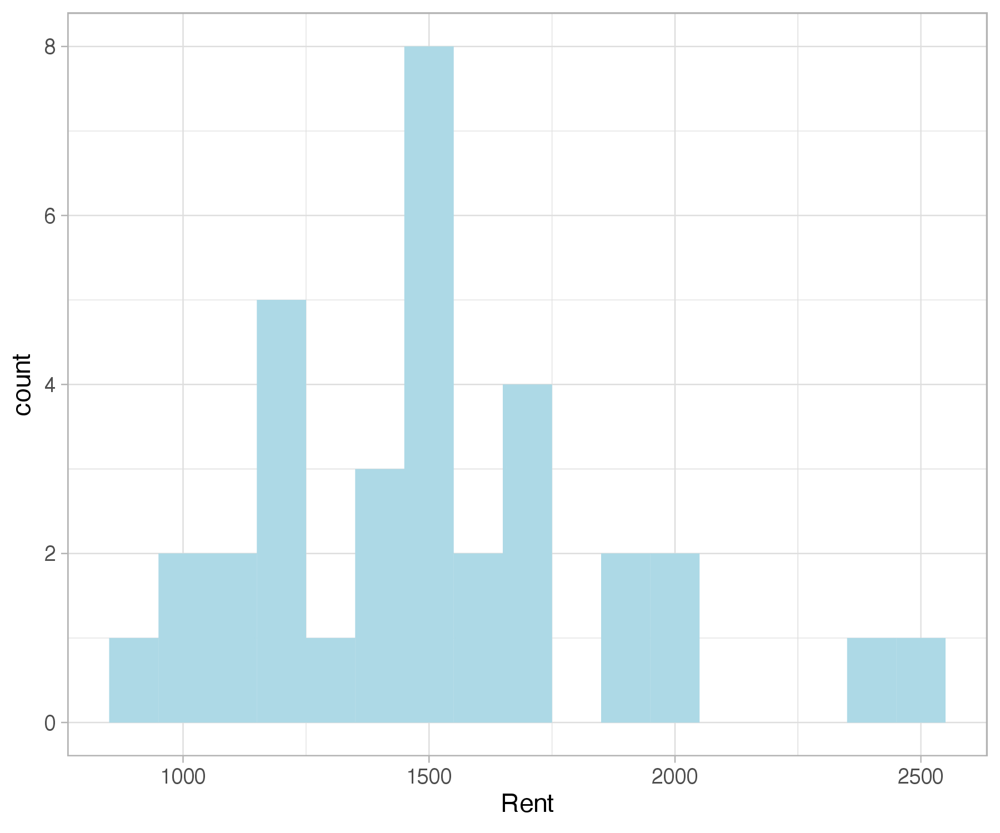

Housing Hunt#
It can be challenging to find housing in Berkeley, and most students aren’t able to visit ahead of time to choose their first place to live. On average, we tend to make it work, but let’s show a bit of survey data to see exactly what that means.
Survey Data (2023)#
We surveyed the following graduate students.
Biostat Masters/PhD |
Statistics Masters |
Statistics PhD |
|---|---|---|
2 |
8 |
28 |
Where we live#
We asked students “Where do you live, approximately (cross streets)?”. In the plot, we added a bit of jitter and removed a few data points corresponding to students living in Emeryville and Oakland.

Four rough clusters appear: Southside (directly south of campus), South Berkeley (below Southside), Northside (directly north of campus) and North Berkeley (west of Northside). The North locations tend to be a bit more expensive.
What we pay#
We asked students “What is your share of the rent (monthly)?”

Most students pay less than $1700, and in particular $\1500 seems like a sweet spot. In fact, the most common housing option—a single room in a two-bedroom apartment, describing ~20 students—has the following distribution:
10% |
25% |
50% |
75% |
90% |
|---|---|---|---|---|
1150.00 |
1306.25 |
1486.25 |
1662.50 |
1800.00 |
How we feel#
We asked students “How financially comfortable do you feel with your current living situation?” Here, 1 means least comfortable and 5 means most comfortable.
Comfort_Level |
Count |
|---|---|
1 |
3 |
2 |
11 |
3 |
10 |
4 |
12 |
5 |
1 |
This, of course, cannot tell the whole story, because students come from a variety of backgrounds and live in a variety of housing setups. When you are deciding to come here, it’s best to talk to someone.
Some advice#
[This section is definitely under construction! We welcome contributions from the community.]
A few places to look#
Classic resources: Craigslist, apartments.com.
As of 2025, this facebook group is relatively active, and you can find apartments, houses, and roommates, too.
Rooms, apartments, and houses#
[This section was last updated ~2015.]
The most common option for single students is shared housing. This is where one person rents an apartment or house, then seeks roommates to spread the cost among additional persons. Individuals interested in this type of housing will find a large variety from which to choose. However, there is also considerable competition for this type of housing in the Fall semester. You will need patience and persistence to find what you are looking for. Be careful in your choice of roommates (duh!). Expect to pay in the range $900-1300 a month, excluding utilities.
Room rentals refer to rooms available in private residences also occupied by the owners and their family; otherwise, these work similarly to shared housing. Sometimes instead of rent, the landlord may wish for you to work for them part-time (e.g. doing child care, house maintenance). This is a highly variable rent.
Apartments and houses are slightly more difficult to find. It helps to have patience and a car when you are looking. The process can take anywhere from 2-3 days to 2-3 weekends, depending on when you look and how much legwork you are willing to do in one day. Having a car will definitely help your range and ability to view multiple apartments in one day. Treat a friend with a car to dinner, or Uber/Lyft. It’s cheap and will make your search 10 times more effective. For a studio (one room) apartment, expect to pay in the range $1600-2000, excluding utilities. One bedroom apartments near campus can be found for $1900-2400.
Your best bet for finding housing is either Craigslist, or talking to fellow grad students for potential open rooms. Some grad students have been able to secure housing on their visit day in March for the following academic year by asking current stats grad students.
Some special housing options#
[This section was last updated ~2015.]
International House. A great option for your first year while you are adjusting to Berkeley. They basically take care of everything for you, and even provide you with a social environment for making new friends. Affiliated with, but not owned by the university. Provides dormitory-style housing for around 600 grad students, postdocs and senior undergrads. Foreign students comprise 50% of the residents of I-House, and U.S. citizens make up the remainder. Less than a 10 minute walk from/to Evans Hall so you can roll out of bed and stroll over to 205. Several statistics grad students currently live there. One- and two-person rooms are available. The room/boarding rate is somewhat expensive, but I-House is convenient and a great environment for new students. Incoming graduate students who apply early (around April if possible) are likely to be admitted. Late applicants may be placed on a waiting list. Note that it is compulsory for residents to have a meal plan at the I-House dining hall (12-19 meals per week; trust us, you won’t want 19). This is included in the rent.
Ida Jackson Apartments. One block south of campus, the Jackson Graduate House is the closest University-owned housing to campus. It houses around 120 graduate and some undergraduate students in apartments with 2 to 6 bedrooms. The cost of rent is a bit higher than off-campus and increases in apartments with fewer bedrooms. Students usually apply early, after admittance to Cal, and are randomly assigned to a room in an apartment where number of bedrooms is by choice. Cal Housing will usually assign same gender apartments but may resort to co-ed apartments when needed. The building was built in 2002 and is generally new and well-kept. Cal Housing provides cleaning services and toilet paper (!!!) once a week to upkeep common areas of the apartments such as living room, kitchen, and bathrooms.
Manville Apartments. Reserved for law and graduate students. Located three blocks from the southwestern corner of campus at Shattuck Avenue and Channing Way, Manville apartments are within walking distance of downtown Berkeley near shops, banks, movie theatres, restaurants and public transportation. The housing style is single occupancy studios. This is a great option for your early time at Berkeley if you would prefer to live alone. Apply early as there are not many spaces.
University Village. UVA is a 58 acre complex with 760 one, two and three bedroom apartments, and two bedroom townhouses, located three miles west of the campus. UVA has its own recreational & community center, a café, laundry rooms, and child care center.
Berkeley Student Cooperative. The Berkeley Student Cooperative (BSC) is an organization consisting of 15 co-ops in Berkeley. All residents of the co-ops are students at Berkeley or nearby schools. Two of the co-ops, Hillegass Parker House (HiP) and Convent, are graduate student (and over 25 undergraduate) only. There are also several apartment-style co-ops. Each year typically 2 or 3 Statistics graduate students live in the co-ops. At the co-ops you are responsible for paying rent (~$800 / month) and workshift (~4 hours per week). In return you get a room, full board, and a lot of fun (sometimes crazy) housemates.
Strategies#
[This section was last updated ~2015.]
Although it’s possible to search from long-distance, it is of course much easier when you’re in Berkeley - for one thing, landlords will often want to meet you before letting you live at their place. In any case, you must be easily contactible during your search, preferably by phone. When meeting a potential landlord, dress tidily. Make sure to mention that you’re a graduate student. When meeting potential housemates, try to have an interesting or amusing way of telling them you’re a statistician.
You may wish to consider living outside of Berkeley. Students also live in the East Bay cities of Albany, El Cerrito, Emeryville, Kensington and Piedmont, and in the Oakland neighborhoods Rockridge, Montclair, Claremont and Piedmont Pines. Often the housing here is much cheaper than similar facilities in Berkieley, commuting, however, can be frustrating. It goes without saying that you should only live in a place where you feel comfortable and safe.
Be patient, thorough and decisive. If you find an apartment that suits you, make a rapid decision. If you take too long to make up your mind, you may find that someone else has signed for the apartment in the interim.
Some landlords in Berkeley can be rather difficult to deal with. It may be a good idea to do a quick background check of your landlord (which you can do through the Rent Stabilization Board in Downtown Berkeley) before renting from him/her. It’s not uncommon for landlords to have a history of withholding security deposits from their tenants and getting sued year after year.
Resources from other departments#
See the Graduate Assembly Housing Guide, from the graduate student government at Berkeley.
The Chemical and Biomolecular Engineering grad students also have a nice housing guide.
See the Graduate Division’s housing guide, from the official university admins.
See the International Office’s housing guide, tailored to international students.
Case studies#
[This section was last updated ~2015.]
Geno, from Arizona (~2015)#
When I first accepted the admission to the statistics department (2012), I immediately began looking for ‘school-run’ housing. I applied for Manville Housing and was accepted (my fellowship gave me priority), I lived alone in a Manville studio apartment for $1050 a month for my first 2 years. I lived directly in downtown Berkeley, and was able to easily walk to restaurants, bars, and Bart with no trouble. However, the noise level wasn’t for me.
In 2014, I joined with two other statistics students to find a house together in the Berkeley via Craigslist. We found a 2-story, 3 bedroom - 1 bath in the Berkeley hills for $3300 a month (which we split three ways). As of 2016, we are still living there. There is great rent-control in Berkeley, so we are happy to stay there as long as we need to graduate. It was a nice experience to make friends within the department, and then choose to move in with them after we became friends, to avoid the bad-roomate situation.
Kellie, from the Bay Area (~2015)#
I did my undergrad at Berkeley, so I have lived all over the campus area. I spent my first year in the dorms on Southside, my second year in a shared house with 3 girls (\(900/month for a large single room), my final undergrad years in a one-bedroom near Elmwood (\)1300/month), and my first two years of the PhD in a studio in Gourmet Ghetto ($1600/month). I currently live in a studio on Northside and I couldn’t be happier with the location, noise levels, feeling of safety, etc. Rents have skyrocketed since I moved here, but there’s not much to be done about it.
I cannot stress enough the importance of getting renter’s insurance. My previous apartment building had a fire and I was forced to find alternate housing for three months while they sealed off the building and did repairs. The city of Berkeley has protection and financial compensation for tenants during the first few weeks of dislocation, but my renter’s insurance covered all of my additional costs after that.
Rebecca, from Australia (~2015)#
Upon deciding to come to Berkeley, I immediately started looking for housing. Sadly, coming from Sydney meant that I wouldn’t have much of an opportunity to scope out the city before moving, so I decided to apply to live at the International House. While I-House was very convenient, and most people love living there, it was also not really my scene. Although I had my own room, I had never lived in a dorm-environment before (dorms aren’t very common in Australia), and I subsequently discovered that it was not for me. I decided to move out after one semester. I certainly don’t regret choosing to live in I-House during that first semester because it saved me the hassle of having to find somewhere to live when I first arrived and I didn’t have to worry about food or setting up internet or any of those super fun things.
After I decided to move out of I-House, I began the craigslist search and easily found a big 8-bedroom house (don’t worry, it has 3.5 bathrooms and a massive kitchen). The house was filled with an eclectic mix of grad students and engineers on the South Side of campus and I currently pay $1068/month. My bedroom is really nice, and very large with bay windows and a walk-in closet! The house is a really fun place to live, and we have an excellent community that respects a mix of hard work and play. Sadly, as of May 2017, all of the original tenants from 6 years ago will have finally graduated and moved out, which means that we lose our rent control and our rent will increase by around 20-30%, bringing it up to current market rates.